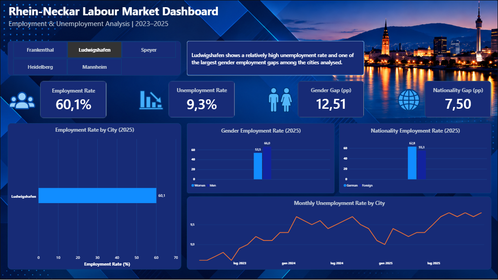

POWER BI · EARLIER FIVE-CITY PROTOTYPE

01 / LABOUR MARKET
Rhein-Neckar Labour Market
How different are the job markets in six nearby cities? I used official German labour statistics for 2023–2025 to compare employment, unemployment and demographic gaps. The workflow connects Python data preparation and validation, PostgreSQL analysis and Power BI reporting.
KEY FINDING
View project and methodology ↗Worms has the largest gender employment gap in the June 2025 comparison: 13.44 percentage points.